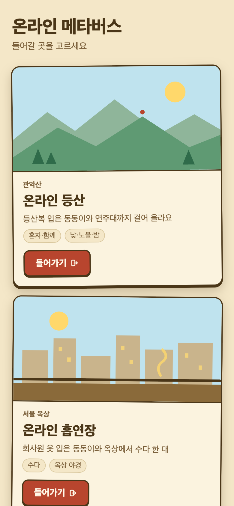
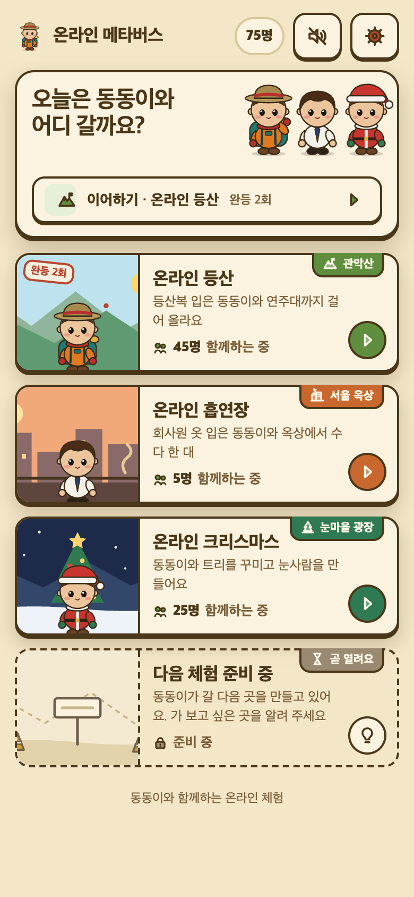
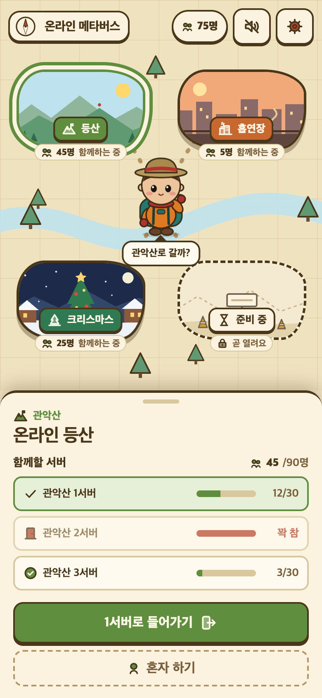
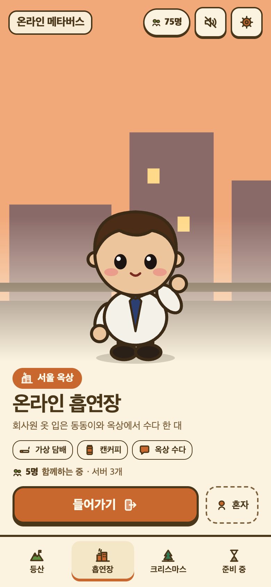

<body style="margin:0;background:#2b2418;color:#f4e7c8;padding:16px;display:grid;grid-template-columns:repeat(4,390px);gap:16px;width:1624px">
<figure style="margin:0"><figcaption style="font:800 20px sans-serif;margin:0 0 6px">지금 허브</figcaption></figure>
<figure style="margin:0"><figcaption style="font:800 20px sans-serif;margin:0 0 6px">A · 책갈피 카드 (추천)</figcaption></figure>
<figure style="margin:0"><figcaption style="font:800 20px sans-serif;margin:0 0 6px">B · 마을 지도</figcaption></figure>
<figure style="margin:0"><figcaption style="font:800 20px sans-serif;margin:0 0 6px">C · 큰 무대</figcaption></figure>
</body>
